<nav class="navbar" x-data="{ isOpen: false }" @click.away="isOpen = false">
    <div class="logo">
        
    </div>
    <button class="mobile-menu-btn" :class="{ 'active': isOpen }" @click="isOpen = !isOpen" aria-label="Menu">
        <span></span>
        <span></span>
        <span></span>
    </button>
    <ul class="nav-links" :class="{ 'active': isOpen }">
        <li><a href="../pages/index.html#accueil" @click="isOpen = false">Accueil</a></li>
        <li><a href="../pages/index.html#histoire" @click="isOpen = false">Histoire</a></li>
        <li><a href="../pages/index.html#personnages" @click="isOpen = false">Personnages</a></li>
        <li><a href="../pages/index.html#galerie" @click="isOpen = false">Galerie</a></li>
        <li><a href="../pages/index.html#plateformes" @click="isOpen = false">Plateformes</a></li>
    </ul>
</nav> 